{kind=link}
{kind=link}
{kind=link}
{kind=link}
{kind=link}
{kind=link}
 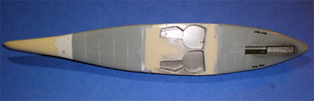
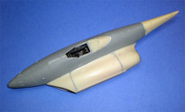
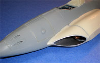
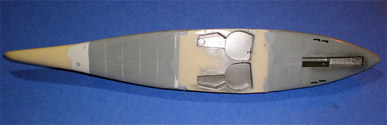
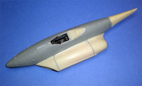
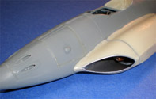
{kind=link}
{kind=link}
{kind=link}
You may click on the small images above to view larger pictures
Antares Me-262 HG III 1/48 Resin Conversion
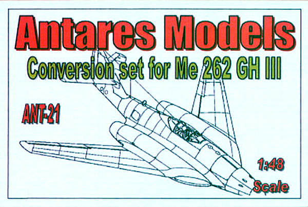
Kit #21 MSRP $35.00
Images and text Copyright © 2008 by Matt Swan
Developmental Background
When the Messerschmitt Me-262 first blew through Allied bomber formations aircrews were amazed and astonished at the performance levels they witnessed however the creator of this technology, Willie Messerschmitt, only saw it as an interim type of aircraft as it went into production and the platform was considered dead by 1945. Adolf Busemann had been researching swept wing technology as early as 1935 and in 1941 had proposed that a 35 degree swept wing (the same as seen on the F-86 and MiG-15) be installed on the Me-262 airframe. By 1944 he had two radical paper designs well developed that utilized more radical wing sweeps than used on the initial 262, these high speed designs (Hochgeschwindigkeit) were designated HG II and HG III. The primary development of the HG.III was aimed at a three place night fighter but a day version did exist on paper. The RLM had already approved an inventory of electronics for use in the aircraft however very soon a directive was issued to divert all production capability toward projects deemed more important for the war effort. Messerschmitt ignored this directive and continued development of the project.
The HG.III design utilized a 45 degree swept wing and embedded the turbine engines (most likely BMW 003) in the wing roots rather than slung under the wing. This greatly reduced the aircrafts drag ratio. It was discovered that the Me-262A suffered from a nose down pitch as speed neared the trans-sonic range which was not correctible and would simply increase resulting in a steeper dive and increased airspeed that would ultimately destroy the air-frame. The HG.III was designed to operate within the trans-sonic range with a proposed maximum speed of Mach 0.96. 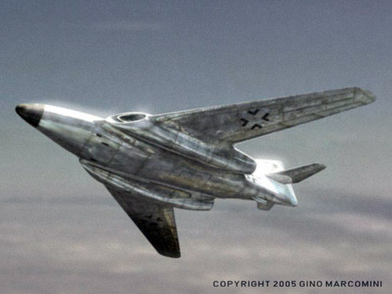 Oddly enough Messerschmitt made no effort to break the sound barrier with the 262 program. The day fighter would have carried two 20 mm MG 151 cannon and two 30 mm MK 108 cannon. The night fighter version would have been based on the stretched fuselage proposed for the Me-262B-2 with three crew positions, a FuG 218 Neptun radar and only two 20mm MG 151 cannon.
Ultra decrypts indicated that the HG.III prototype airframe was nearing completion however no airframe was discovered at the end of the war. The factory building where the HG.III was under construction suffered a bomb strike during a raid resulting in airframe damage to the prototype. From here diverging stories indicate that the airframe was slated for repair while others speculate that it was scrapped. Some stories circulated that it was completed and flown but was involved in a collision with another aircraft landing. It is known that this air-shape was used to test a captured German wind tunnel after the war. Due to the considerable similarity of this aircraft to the post war development of the panther and Cougar one has to wonder if data from this program was delivered to the Grumman engineers or if this similarity is sheer coincidence. Boeing did bring back some sweep wing technology that contributed to the B-47 project.
So, was this aircraft ever completed? If so did it fly and how well did it perform? What happened to that prototype airframe? We may never know the answers to these questions. It is entirely possible that Allied technology recovery crews simply walked past a scrapped aircraft lying in a heap of rubble and never recognized it for what it was.
The Kit
Before we take a look at the kit let’s take a look at the creator, Marcelo Russo. Many times when we find ourselves confronted with a cottage industry kit manufacture we see someone coming from an engineering or mechanical field that dealt with pattern making or engraving however from time to time an individual of unusual talent and skill appears from left field and such is the case with Marcelo. Marcelo is a retired book keeper who mastered his first resin project in 2000, the pulse jet conversion for the He-162 and began operations as Antares Models in 2001. From that moment on Marcelo has provided the modeling world with an amazing collection of Luft ’46 project found nowhere else. Marcelo is truly a one-man operation, creating the masters, manufacturing the molds and casting the resin all by himself yet still finds time to build models. In 2004 he created the Me-262 HG III conversion intended for the Tamiya Me-262 kits and currently has nearly thirty kits and conversions available with many more interesting subjects in the works.
The HG III conversion arrives in a small, compact box with some bubble wrap to protect from shipping damage. The box itself is very sturdy and includes a nice little piece of artwork. Inside we have a large bag of medium tan resin pieces and an instruction package. The resin parts are formed from a very hard resin that is fairly difficult to trim with a razor, the modeler is much better off to work with files and sandpaper when cleaning up parts. There are some casting boogers around the pour bases but nothing too difficult. Panel lines are crisp and engraved. Engine inlet detail is provided by a separate turbine insert while exhaust detail is a simple cone cast in place and somewhat lacking in detail. The forward inlet piece is a very nicely designed part with an oblong opening. The secondary piece inside where the turbine blades inset is a perfect cylinder which creates a nasty step when you look inside – this area needs to be ground down to achieve a smooth transition.
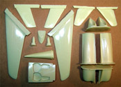
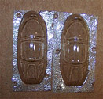
Once the pour blocks are removed the three main engine pieces fit together very nicely on the exterior side but do have some steps on the fuselage facing side. This can most likely be taken care of with a sanding wheel on a Dremel. I believe this conversion was intended to be used with a Tamiya kit however I am fitting it to a Dragon kit and even with that change the unadjusted fit is pretty darned close. Only minimal sanding and filling will be needed to achieve a smooth transition. The engine pieces are clearly marked Left and Right while the main wing pieces appear to be interchangeable. Also included with the kit are replacement elevators for the T tail version and a replacement tail con and butterfly fins for a secondary option. The final pieces of the conversion are a new main gear bay that pulls the landing gear in and forward and a low profile canopy fairing. This replaces all the original kit landing gear detail. The conversion does rely on using the donor kit gear struts and door. The kit includes two vacuform racing canopies that are male molded which results in somewhat softer frame lines.
Overall the conversion pieces fit together well and fit to the donor kit with little effort. The conversion includes seventeen hard resin pieces and two vacuform canopies.
Decals and Instructions
This conversion does not include any decals so the modeler must rely completely on the donor kit decal sheet, spare box items or aftermarket sheets converted for use here. Since it is basically a what-if subject the modeler has plenty of room to roam here. As for instructions Antares includes a three page set of photocopied instructions that opens with a very brief history of the High Speed projects by Messerschmitt along with some basic handling instructions for resin parts. The second page shows general placement of the conversion parts to a donor fuselage and the third page provides some profile views of the airframe with landing gear strut angles. The modeler must study these instructions carefully and test fit parts repeatedly before apply glue.
Construction
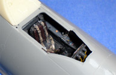
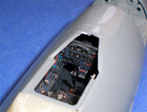
I believe this conversion set was intended for any Tamiya Me-262 however I have a Dragon He-162 Mistel which includes a nearly complete second fuselage for a 262 with cockpit. It does not contain the wheels, landing gear doors or rudder but I can deal with this through aftermarket items and by using the V tail arraignment I don’t need to worry about a rudder. Just about any aftermarket set intended for the 262 can be easily converted to use on this conversion since nearly the entire fuselage section is original material with the exception of the main gear bay. I will be using some Quick Boost replacement gear doors along with a Quick Boost Revi gunsight. CMK wheels will take care of the rest of my landing gear needs and an Eduard colored PE set will help out the cockpit. The original Dragon seat if okay but I will replace it with a Quick Boost seat that includes some nicely cast harness detail.
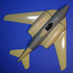
The Dragon Mistel kit does not include any directions for assembly of the 262 cockpit so just to not make any glaring errors I pulled an old set of Dragon 262 instructions from another kit – just for some reference mind you. The original T tail was cut off and the fuselage was assembled without difficulty. The new main gear bay left a few things to be desired for fit, there were some very large gaps to fill which was done with a base coat of Milliput White followed by a couple of applications of Mr. Surfacer 500. I also had to add a small fillet of putty along the bottom of the new V tail cone to blend it into the main fuselage. The aft cockpit fairing was shaved off and the new resin replacement was superglued in place.
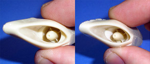
After removing most of the pour blocks and labeling the interior surfaces for left and right I was able to begin with some of the actual conversion. The intakes presented a problem as there was a large step just inside the forward cowling. I used a burr bit in my Dremel to grind this area down and create a better transition to the intake fan. Rough spots were sanded smooth and the interior was painted with Alclad aluminum then assembled. The engine pod pieces and outer wing panel mated together fairly well but needed lots of fill going onto the fuselage. Smaller seams like those between the engine pod pieces were filled primarily with Mr. Surfacer 500. The left side engine pod had some nasty chips along the mating surface that needed filling however the right engine pod was perfect along that same edge. I think I spent more time on this build filling and sanding than anything else. Before attaching the wings and gun covers I filled the nose with a bunch of lead fishing sinkers to ensure that this would not be a tail-sitter.
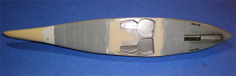
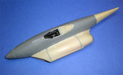
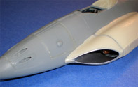
You may click on the small images above to view larger pictures
And so construction surges forward, the wings are both in place now and the gun covers have been secured. Plenty of time was spent with PSR (Putty Sand Repeat) before I was ready to install the landing gear. Basically the main gear legs were swapped from left to right then the retraction mount was carefully sliced off and repositioned. The idea here is that these main legs will rotate 90 degrees during retraction much like a P-40 does. Some thing you can’t look too deeply into, you just have to accept that it works. The nose gear is a directly placement from the kit instructions and once in place the model sat on all three legs just fine. It was about this time that this bird’s pilot, Klaus took a break from his techno band Heiße Scheiße who had been playing in Düsseldorf. Klaus was most impressed with his new steeds progress and declared “Ich nenne ihre Helga” (I shall call her Helga).
Now I’m ready to start some painting. First things first though. The model gets an overall coat of Mr. Surfacer 1200 cut 50% with lacquer thinner. This revealed a few problems that were remedied with spot of Mr. Surfacer 500. After another session of PSR and priming Helga was ready for some color. I started with Alclad aluminum and coated the model evenly with that as a base color. Once it had cured the flight control surfaces were masked off and shot with Alclad magnesium. Additional panels on the wings and fuselage were masked and shot with white aluminum. 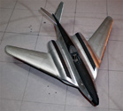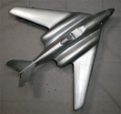 From here I took some magnesium and added a few drops of steel then traced the panel lines to post shade them. Some spots seemed a little too dark for my liking so I misted a little more base aluminum across those areas to help blend it in.
Areas around the engine exhaust were dusted with Alclad jet exhaust to simulate some heat stress. Once I was satisfied with the Alclad phase of paint I masked anti-glare panels and shot them with some Testors flat black. The landing gear struts were brush painted with RLM-02 but the gear bays were left in natural aluminum. The CMK wheels were painted, removed from the pour blocks and drilled out to accept the strut axels. Due to the outward cant of the main gear the flat spot needed adjustment to sit on the ground properly. Gear doors were painted magnesium on the exterior and RLM-02 on the interior.
Antares provides a closed canopy only however a JLC razor saw is excellent for opening these things up. With some careful cutting I had three separate pieces ready to be dipped in Future and masked. While the Future was curing I completed a Quick Boost Revi gunsight and installed it. I had scratch built a directional antenna mount from some stock plastic prior to painting and now added a piece of photo etch scrap to complete the antenna. The spares box produced a ventral antenna. For decals I spent maybe an hour sorting through my decal spares box looking for options before settling on the markings you see below. These were all placed with water and some Micro-Sol setting solutions. I did not use Future on the finish of this model at any time. Once the decals had dried down the canopy was glued in place and a magnet wire retaining strap was added.
Klaus knows hot jets are useful to get hot girls also …..

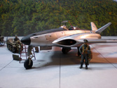
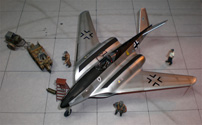
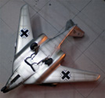
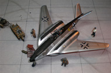
You may click on any of the small images to view larger pictures
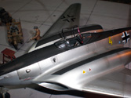
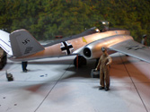
Conclusions
This was a fun build. The Antares parts were well made if somewhat brittle of material. The Antares parts mated up to themselves well but did need some large amounts of filler when mating to the donor airframe. Admittedly some of this may be my own fault due to choice of donor kit. The instructions will get the job done but with some careful consideration. The modeler needs to add his own decals which in most cases will probably come from the donor kit however there are plenty of aftermarket Luftwaffe decals out there to choose from or do what I did, hit the spares box. There are so many different aftermarket detail sets kicking around for Me-262 kits in this scale and just about any of them can be used with this conversion to spruce things up if desired. I think one of the best aspects of this conversion is it is completely theoretical, there are no rivet counters to deal with, no one to say you didn’t do it right. It is a perfect opportunity to let your imagination take wing and do something completely outside the box. I would encourage any Luft ’46 fan to pick up one of these conversions and to also review the complete Antares line of unusual Luftwaffe subjects.


{kind=link}
{kind=link}
{kind=link}
{kind=link}
{kind=link}
{kind=link}
{kind=link}
{kind=link}
{kind=link}
{kind=link}
{kind=link}
{kind=link}
{kind=link}